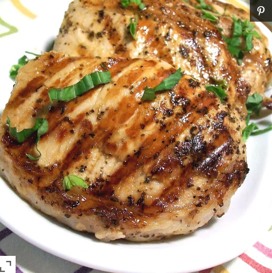

Blueberry Walnut Salad

Fresh & Crisp Blueberry Salad!
An easy, yummy salad, perfect for any season, with berries, nuts, and greens. For an entree add chicken, diced apples, and diced green onions!
Ingredients
- 1 (10 ounce) package mixed salad greens
- 1 pint fresh blueberries
- ¼ cup walnuts
- ½ cup raspberry vinaigrette salad dressing
- ¼ cup crumbled feta cheese
Directions
- In a large bowl, toss the salad greens with the blueberries, walnuts, and raspberry vinaigrette. Top with feta cheese to serve.